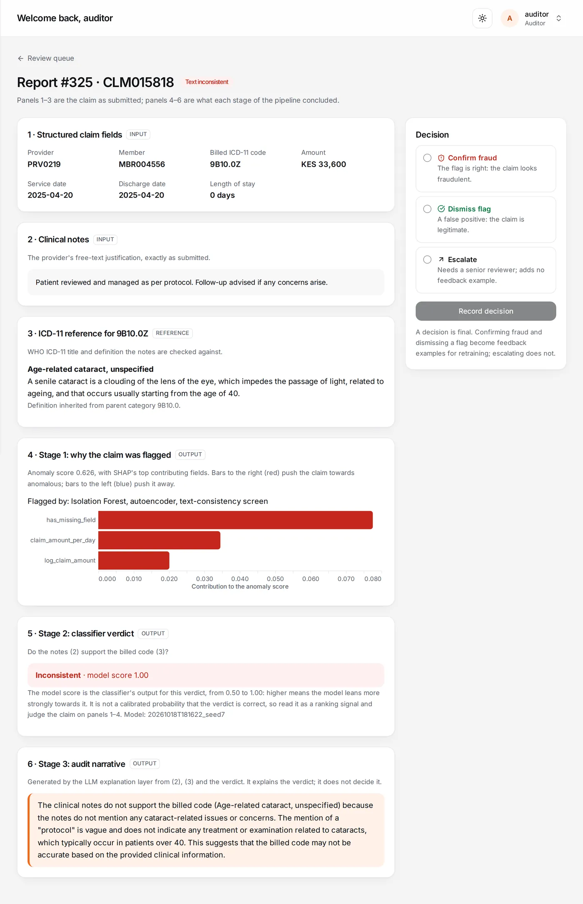
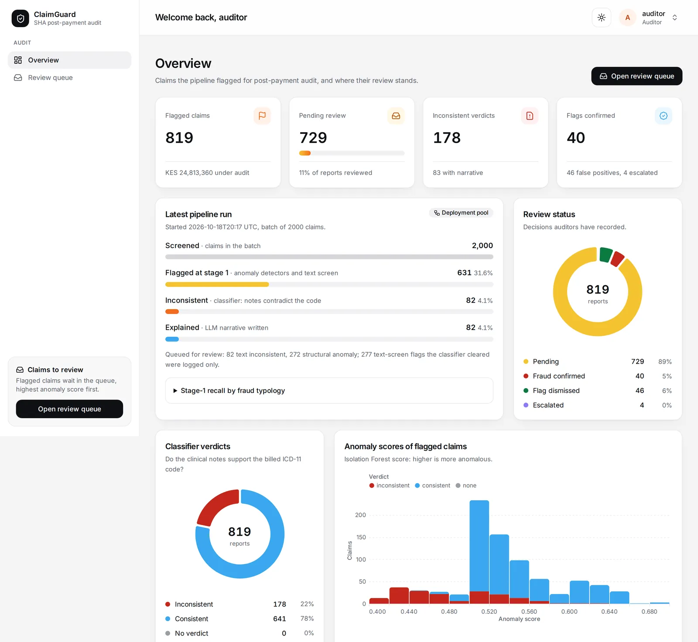
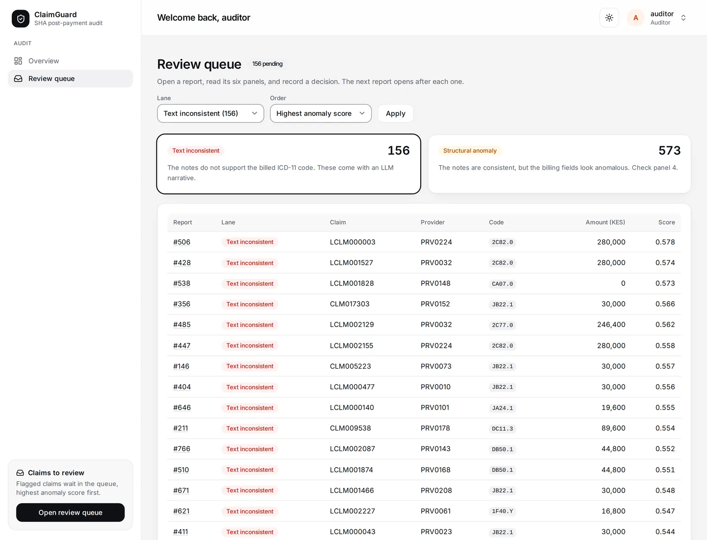
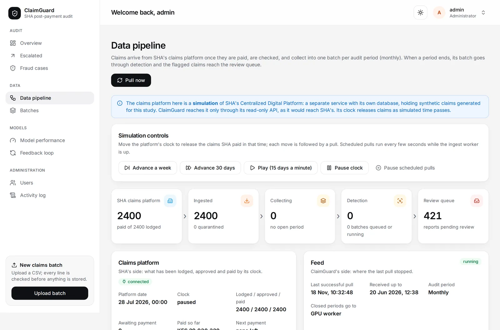
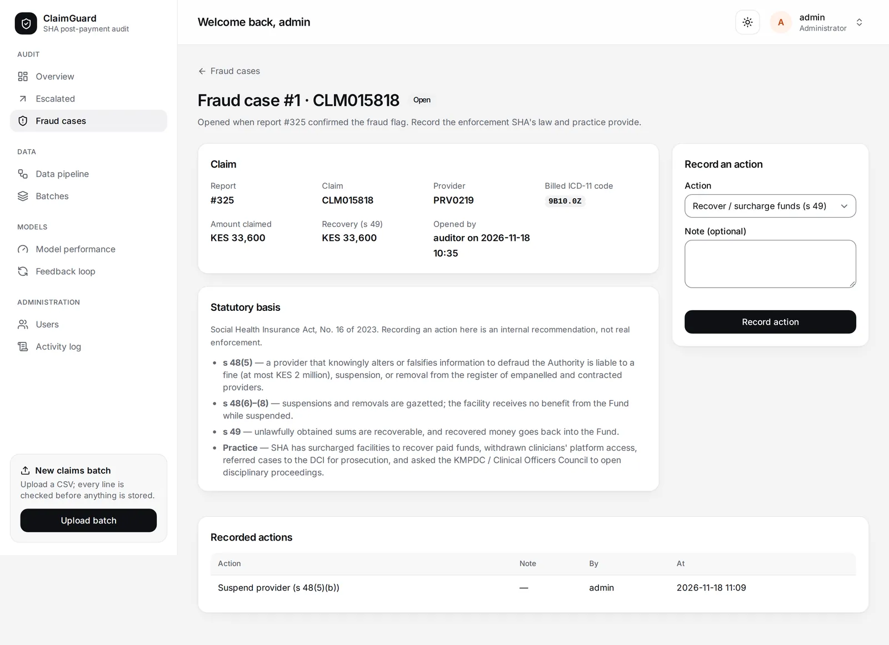
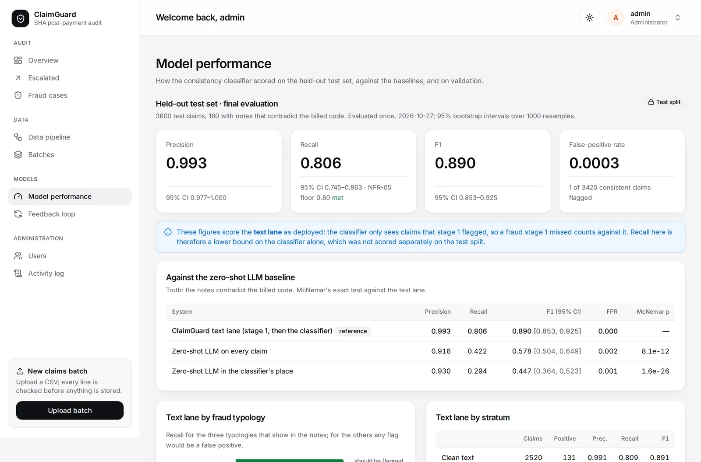

Upcoding
The billed code is swapped for a higher-tariff one while the note still describes the lower-acuity procedure.
● Visible in the noteMoH forensic audit (Kilei, 2025)ClaimGuard audits paid claims for Kenya's Social Health Authority. Anomaly detection picks out suspicious claims, a fine-tuned clinical classifier checks whether each clinical note supports its billed ICD-11 code, and an LLM writes a plain-language explanation for the human auditor. The LLM never decides.

Synthetic claims, priced from SHA's gazetted tariffs. No personal data.
Fraud typologies taken from documented SHA cases and audits.
Note-versus-code check on the held-out test set, against 0.58 for a zero-shot LLM.
False-positive rate when the classifier is combined with billing rules (F1 0.83).
A forensic audit of Kenya's Social Health Authority found a multi-billion-shilling fraud loss within its first six months. Existing checks are static rules over structured billing fields, so a claim whose fields look normal passes, even when its clinical justification describes something other than what was billed.
Valid code, plausible amount, dates in order. Every field passes.
The clinical note set against the WHO definition of the billed code.
Synthetic claim from the first real pipeline run (test case TC-028), an upcoded delivery.
Each stage narrows the batch and passes the next one only what it needs. Every report keeps its evidence from every stage, so the auditor can see why a claim is on screen.
Paid claims are pulled from a simulated SHA claims platform, validated, and grouped into one batch per monthly audit period.
Isolation Forest and an autoencoder score the billing fields, a text screen catches obvious mismatches, and SHAP shows which fields drove each flag.
A clinical BERT fine-tuned with LoRA reads each flagged note beside the WHO ICD-11 definition of its code and judges consistent or inconsistent.
For inconsistent verdicts only, an open-weight LLM explains in plain language why the note does not support the code.
Auditors confirm, dismiss or escalate. Decisions become labelled examples, and a retrained model replaces the active one only if it scores at least as well on the held-out test set.
Prompting a frozen LLM to judge claims is the easy route. Here detection is a supervised signal learned from data and measured on a held-out test set, and the language model is called only after a claim has been judged inconsistent. The rule is enforced in code, not left to convention.
src/narrative/narrative_generator.pydef generate(self, clinical_notes, verdict, icd11_definition): if verdict.verdict != "inconsistent": raise ValueError( "AuditNarrativeGenerator must only be invoked for " "inconsistent verdicts" " — the classifier gates this call, not the LLM." ) # … build the grounded prompt and call the LLM
The injected fraud was not invented. Each typology traces to Kenya's Ministry of Health forensic audit of SHA or to a reported case, and was turned into a rule for generating synthetic claims. Three show up in the notes, and three only in the billing structure.
The billed code is swapped for a higher-tariff one while the note still describes the lower-acuity procedure.
● Visible in the noteMoH forensic audit (Kilei, 2025)Claims with no realistic care pathway and generic or internally inconsistent justification text.
● Visible in the noteMoH forensic audit (Kilei, 2025)A valid ICD-11 code paired with boilerplate unrelated to any plausible presentation for that code.
● Visible in the noteMoH forensic audit (Kilei, 2025)Outpatient visits relabelled as admissions with an extended stay.
● Visible in the billingMoH forensic audit (Kilei, 2025)Providers whose caesarean share sits above the WHO-recommended threshold.
● Visible in the billingMoH forensic audit; WHO guidanceProviders billing for implausibly many dependants per beneficiary, the pattern behind the Kwale County case.
● Visible in the billingKizito, 2026All figures are from a held-out test split of 3,600 claims, scored once after every design choice had been fixed on validation data, with 95% bootstrap intervals and McNemar's test against each baseline. Hover over a bar for precision, recall and false-positive rate.
F1-score on the semantic-consistency task · 180 inconsistent claims
Both differences from the ClaimGuard text lane are significant (McNemar, p < 0.001).
F1-score on all six typologies · ground truth: is_fraud
Orange: ClaimGuard configurations (light orange: A, the pipeline as designed). Grey: baselines.
| System | Precision | Recall | F1 | FPR | Flagged |
|---|---|---|---|---|---|
| C: text lane or any rule | 0.844 | 0.808 | 0.826 | 0.017 | 345 |
| Structured-only classifier (3 seeds) | 0.700 | 0.509 | 0.588 | 0.025 | 240–298 |
| Rule-based baseline | 0.760 | 0.467 | 0.578 | 0.016 | 221 |
| A: pipeline as designed | 0.439 | 0.775 | 0.561 | 0.110 | 635 |
| Zero-shot LLM in the classifier's place | 0.386 | 0.622 | 0.476 | 0.110 | 581 |
| Isolation Forest alone | 0.668 | 0.353 | 0.462 | 0.019 | 190 |
The learned classifier beat a zero-shot LLM given the same note and definition by a wide margin, at almost no false positives. A learned semantic signal works where prompting alone does not.
The pipeline as designed (A) did not beat the rule-based baseline overall, F1 0.56 against 0.58: its recall-tuned anomaly detectors flagged 11% of legitimate claims.
Configuration C was chosen on validation data, and the rules it uses were written for the injected patterns. All results come from synthetic data; transfer to real SHA claims is untested.
A Django web application deployed on Oracle Cloud and running at claimsguard.tech. Duties are separated: the Administrator runs the data side and the Fraud Auditor judges the results, and every action is written to a read-only activity log. All data shown is synthetic.





The repository holds the full pipeline, the test suite, the notebooks, the model card and the deployment runbook.